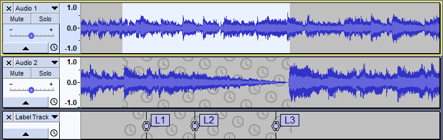
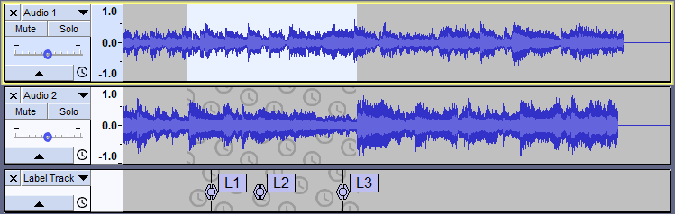
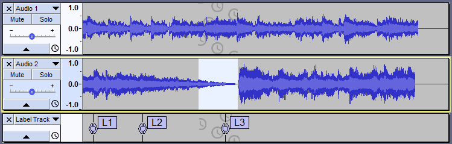
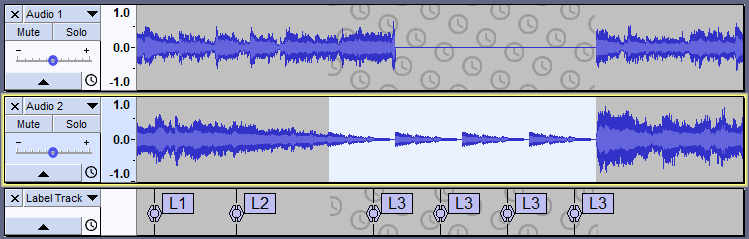

Sync-Locked Track Groups - Time Stretching
From Audacity Development Manual
Time stretching operations on Sync-Locked Track Groups
The following effects, when applied to a region in a selected track (or tracks) in a Sync-Locked group, will cause the length of non-selected tracks in the group to be adjusted to match the change in length of the selected track, either by truncating the non-selected tracks from the right or by adding silence. Audio before and after the selection will remain synchronized. Audio within the selection may or may not remain synchronized, as the time stretching effect is not applied to the Sync-Locked tracks.
Any Label track that forms part of the Sync-Locked Track Group will be stretched positively or negatively, the same as the selected track(s) - or in the case of Repeat will have that section of the Label track repeated.
- Change Speed: Sync-Locked tracks will be adjusted by having the selected region(s) shortened from the right (if the change in speed is positive), or have silence inserted after the selected region (if the change in speed is negative).
- Change Tempo: Sync-Locked tracks will be adjusted by having the selected region(s) shortened from the right (if the change in tempo is positive - faster), or have silence inserted after the selected region (if the change in tempo is negative - slower).
- Repeat: If applied to a selection that does not end on the end of a track, silence is inserted in the Sync-Locked tracks where the repeats are placed in the selected track(s)
- Sliding Stretch: If the time-scale changes shorten the selection then the Sync-Locked tracks will be shortened from the right to maintain time synchronization among the tracks; if the time-scale changes lengthen the selection then the Sync-Locked tracks will have silence inserted to maintain time synchronization among the tracks.
- Truncate Silence: Removes audio from Sync-Locked tracks to maintain time synchronization with remaining sections of the selected track.
- Delay: If applied to a selection that does not end on the end of a track, silence is inserted in the Sync-Locked tracks where the delays are placed in the selected track(s) to maintain time synchronization among the tracks.
| Paulstretch also changes the selection length of any selected tracks in the Sync-Locked Track Group, but currently does not observe the sync-locking and does not cause changes to any un-selected Sync-Locked tracks. Label tracks are not affected by Paulstretch whether selected or not. |
Example-1: Change Speed
Before
- 
- After Effect > Change Speed
- with a setting of 50%, which makes the selection faster and shorter
- 
- Result: Audio has been removed from the lower audio track. Note that in this case audio within the selection does not remain in synchronization since the Change Speed effect is not applied to the Sync-Locked track. Audio before and after the selection remains synchronized.
- But note too that the Label track has been stretched, shrunk, appropriately (and not truncated) to maintain synchronicity the the select track, the top track.
Example-2: Repeat
Before
- 
- After Effect > Repeat
- with 3 repeats
- 
- Result: Silence has been inserted into the upper audio track and the Label track has had its synced "selection" repeated three times.